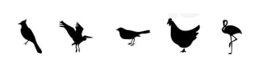

I'm a Senior Research Scientist at DeepMind working on grounded language learning, interpretability and safety of LLMs. I finished my PhD at Brown University advised by (the incredible) Ellie Pavlick, and defended my thesis with the most excellent committee I could have asked for; with Stefanie Tellex, George Konidaris, Michael Littman and Felix Hill. As an undergrad, I was advised by Ani Nenkova and Byron Wallace in various areas of machine learning and language processing.
My research is at the intersection of language, grounding and safety, aiming towards building more intelligent and interpretable agents that can learn to use language to communicate and coordinate with each other.
Language can be a powerful tool to help agents learn and adapt from small amounts of human-intelligible data. I'm specifically interested in (1) using the structure of language to aid reinforcement learning and multi-agent algorithms, (2) understanding the interplay between language and other modalities and (3) methods for better interpretability of models that use language to allow safer and more ethical systems.
Apart from work, I enjoy reading vast amounts of literature, going to new mountains, and to coffeeshops. Feel free to reach out with research related questions or otherwise!
Appropriate Incongruities in Prototype Theory
What I’m most interested in is creating frameworks that incorporate language knowledge, RL exploration strategies and human-level inference, to work towards building systems that reason and act at a level that is at par with human intelligence. This includes augmenting existing reinforcement learning algorithms with language supervision, allowing multi-agent algorithms to use and extend to natural language, as well as modeling and probing interactions between agents to better interpret and explain their behaviours.
Microsoft Research: Microsoft Turing Academic Program Worked with Dean Carignan, Saurabh Tiwary, Pooya Moradi, Ali Alvi and others at MSR.Summer 2021.
DeepMind, London: Research Intern (Multi-agent Reinforcement Learning) Worked with Angeliki Lazaridou, Richard Everett, Edward Hughes and Yoram Bachrach. Summer 2020.
Google AI, Mountain View: Research Intern (Vision and Language Reinforcement Learning) Worked with Alex Ku and Jason Baldridge. Summer 2019.
Johns Hopkins University: Jelinek Summer Workshop on Speech and Language Technology (JSALT) Worked with Ellie Pavlick, Sam Bowman and Tal Linzen. Summer 2018.
Max Planck Institute: Cornell, Maryland, Max Planck Pre-doctoral Research School (CMMRS) Summer 2018.
University of Pennsylvania: Undergraduate Researcher Worked with Ani Nenkova and Byron Wallace. Summer 2017-18.
Princeton University: Program in Algorithmic and Combinatorial Thinking (PACT) Led by Rajiv Gandhi.Summer 2016.
Rutgers University: Undergraduate Researcher Worked with Rajiv Gandhi.2016-2018.
September 2024
I'm giving a talk on safety and ethical implications of LLMs at the M2L Summer School .
July 2024
I'm giving a talk at a CogSci workshop on understanding the conceptual structure of language models.
June 2024
I'm at the Mexican NLP Summer School co-located with NAACL and on a panel talking about PhDs in NLP.
November 2023
I'm giving a guest lecture at Brown CS 1460 on grounded language learning.
October 2023
I'm at the DIMACS workshop talking about language models and multi-agent reinforcement learning can benefit from each other.